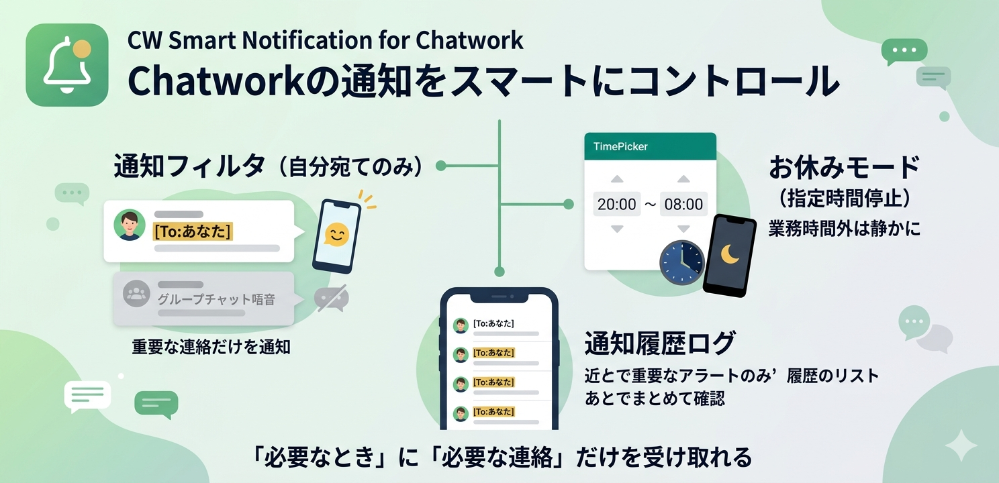

An Android application that periodically checks your Chatwork unread messages and smartly notifies you of mentions and relevant updates.

Key Features
Periodic Polling
Checks the Chatwork API every 15 minutes and notifies you if there are new unread messages.
Mention Filter
Filter notifications to only receive alerts for direct mentions (TO) or replies.
Quiet Hours
Specify time ranges (e.g., at night) when you don't want to be disturbed by notifications.
Notification History
Review your notification history within the app and jump directly to the message in Chatwork via deep links.
How to Setup
1. Obtain Chatwork API Token
To use this app, you need a Chatwork API token.
- Log in to Chatwork.
- Click your profile icon in the top-right corner and select "API Settings".
- Enter your password, click "Display", and copy the generated API token.
2. Configure the App
- Launch the app.
- Grant notification permissions when prompted on first launch.
- Tap the settings icon (gear) in the top-right corner.
- Paste your copied token into the "Chatwork API Token" field.
- Optionally configure "Mentions Only" or "Quiet Hours".
- Tap "Save" to save your settings.
※ This app is an unofficial helper application for Chatwork and is not affiliated with Chatwork or kubell Co., Ltd.
※ "Chatwork" and its logo are trademarks or registered trademarks of kubell Co., Ltd.